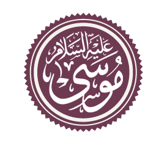

Моисей: из рабов в пророки
Это — мой посох; я опираюсь на него при ходьбе и сбиваю им листья с деревьев для моих овец. Годится он и для других моих нужд
| Муса | |
|---|---|
|  | |
| Детали персонажа | |
| Род деятельности | Проповедник |
| Также известен как | христ. — Моисей иуд. — Моше |
| Связанные персонажи | брат Харун, Фараон, Асият |
Моисей (в араб. интерпретации Муса) — пророк, который упоминается сто тридцать шесть раз в Священной Книге Коран. И особое внимание обращается в Коране на историю его жизни. Моисей — третий пророк Всевышнего Аллаха, которому была ниспослана Божественная книга евреев Тора (Таурат) и Заповеди Бога. Муса приходился потомком пророкам Ибрахиму и Якубу: он родился спустя пять веков после пророка Ибрахима. Моисей прожил сто двадцать лет.
Содержание
Начало истории
Раньше, чтобы мальчик не стал мужчиной, Фараону приходилось каждый второй год убивать младенцев. В наше время ему достаточно было бы дать этому мальчику планшет...
Пророк Муса, мир ему, родился во времена угнетения и политической тирании. Египтом правил жестокий и сумасбродный правитель-фараон, который объявил себя богом и не желал признавать никаких других повелений, кроме своих собственных желаний. Есть предания, что Фараону было предсказано его советниками-мудрецами, что скоро среди евреев должен родиться мальчик, который свергнет его с престола и выведет евреев из Египта, поэтому он приказал убивать новорожденных еврейских мальчиков каждый второй год, оставляя в живых только девочек.
В год рождения Мусы, мир ему, новорожденных сынов Израилевых обычно казнили. Однако, мать Мусы, мир ему, проявила в этой ситуации незаурядное мужество и упование на Бога — она не пожелала отдать ребенка египетским стражникам, но положила его в корзину и опустила в реку Нил, надеясь на милость Всевышнего к ее ребенку.
Корзину с ребенком заметила жена Фараона. И поскольку у нее не было своих детей, она взяла этого ребенка на воспитание и вырастила как своего сына.
Основные этапы жизни
История жизни пророка Мусы подразделяется на пять этапов:

- Муса родился, оказался во дворце египетского Фараона, где проходило его детство;
- Муса переселился из Египта в Мадиану, где он прожил при пророке Шуайба больше десяти лет;
- время, когда на него была возложена Богом пророческая миссия, он возвратился в Египет и начал борьбу с египетским Фараоном и его сторонниками;
- исход Мусы и его племени из Египта, и преследование их египетским Фараоном со своей армией,которые погибли под волнами Красного моря;
- получение Мусой знамений на горе Синай, поиски земли обетованной и начало противостояние Мусы и сынов Израиля, народа, который пошел за ним и следовал за ним по пустыне.
Способности
Прижми свою руку к боку, и она выйдет белой, без следов болезни. Вот тебе еще одно знамение!
Мусе было даровано множество способностей и чудес:
- Ван-панч
- Превращение посоха
- Молочно-белая рука без следов болезни
- Манна и перепела в безжизненной пустыне
- Тора